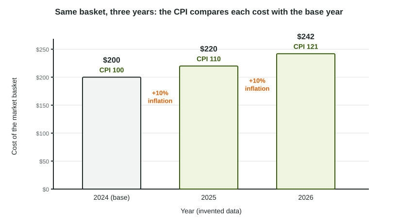

Pricing the same basket every year
Prices of single goods jump around: gas rises one month and falls the next, phones get cheaper while rent climbs. To see what is happening to prices in general, economists pick a market basket, a fixed list of goods and quantities, and price the very same basket each year. Comparing its cost with its cost in a chosen base year gives a price index:
The base year's index is always 100. The consumer price index (CPI) uses a basket of the goods and services typical urban households buy: food, housing, gas, clothing, medical care, entertainment and more.

Worked example: a three-good CPI (invented data).
The basket is 10 pizzas, 20 gallons of gas and 5 movie tickets. 2024 is the base year.
| Year | Cost of the basket | CPI |
|---|---|---|
| 2024 | ||
| 2025 | ||
| 2026 |
The slips: adding the prices without multiplying by the quantities, leaving out the "× 100", and turning the fraction upside down (base year on top).
The inflation rate
Inflation is a rise in prices in general across the economy. The inflation rate is the percent change in a price index:
From 2024 to 2025:
A CPI of 121 also tells you prices are 21% higher than in the base year. It does not mean prices rose 121%, and it is not this year's inflation rate.
Deflation and disinflation
| Term | What happens to the index | Example |
|---|---|---|
| Inflation | Rises | 100 to 104: 4% inflation |
| Disinflation | Still rises, but more slowly | 104 to 107: about 2.9%, down from 4% |
| Deflation | Falls | 107 to 106: negative inflation |
Disinflation is not deflation: when the inflation rate falls from 4% to 3%, prices are still going up.
Real and nominal values
A nominal value is measured in dollars of the day; a real value is adjusted for prices, measured in base-year dollars:
Worked example: a real wage.
Rosa earns a nominal wage of $30 an hour, and the CPI is 120. Her real wage is base-year dollars an hour: her pay buys what $25 bought in the base year.
Going the other way: a $40,000 base-year salary needs
A shortcut for changes: the percent change in a real value is about the percent change in the nominal value minus the inflation rate. A 3% raise with 5% inflation is about a 2% fall in the real wage.
Why the CPI overstates inflation
- Substitution bias. When beef doubles in price, families buy less beef and more chicken. The fixed basket still prices the old amount of beef, so it overstates how much their cost of living rose.
- New goods. A fixed basket is slow to include new products, which often fall in price after they appear.
- Quality changes. If a laptop costs 5% more but is much better, part of the higher price buys quality, yet a simple index counts it all as inflation.
Statistics offices update baskets and adjust for quality to shrink these biases, but they remain a standard reason a fixed-basket index can overstate inflation. One limit of the course: the AP® Macroeconomics exam does not ask you to calculate a producer price index.